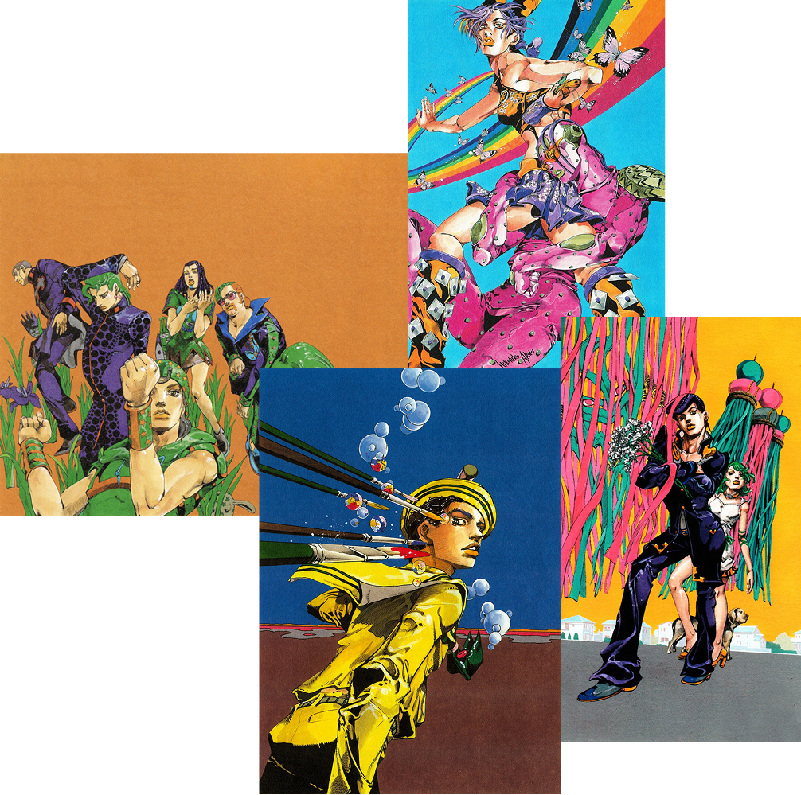

아라키 히로히코의 세계,
죠죠의 미학
『죠죠의 기묘한 모험』은 1987년부터 이어진 30년이 넘는 여정 속에서 만화라는 매체를 넘어 하나의 예술 장르로 진화했습니다. 아라키 히로히코의 독창적인 포즈와 비현실적인 색채, 패션 일러스트를 연상시키는 인물 표현은 디자인과 예술의 경계를 흐리며 독자적인 '죠죠 스타일'을 구축했습니다. 본 아카이브는 그 시각언어의 변화를 4부 이후의 시기를 중심으로 탐구합니다.
